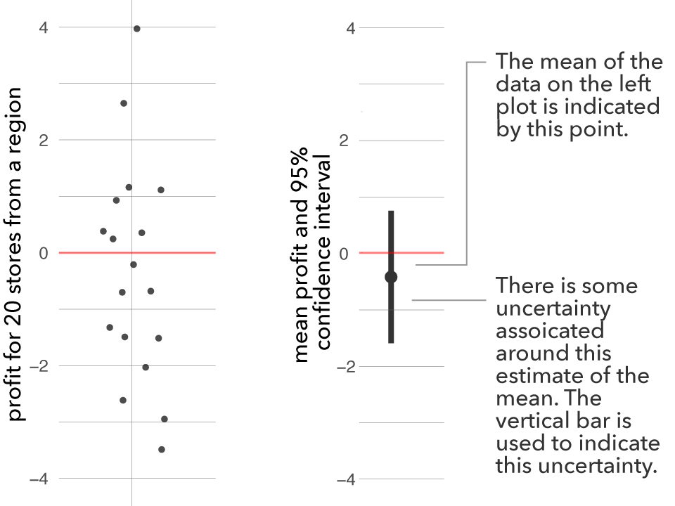
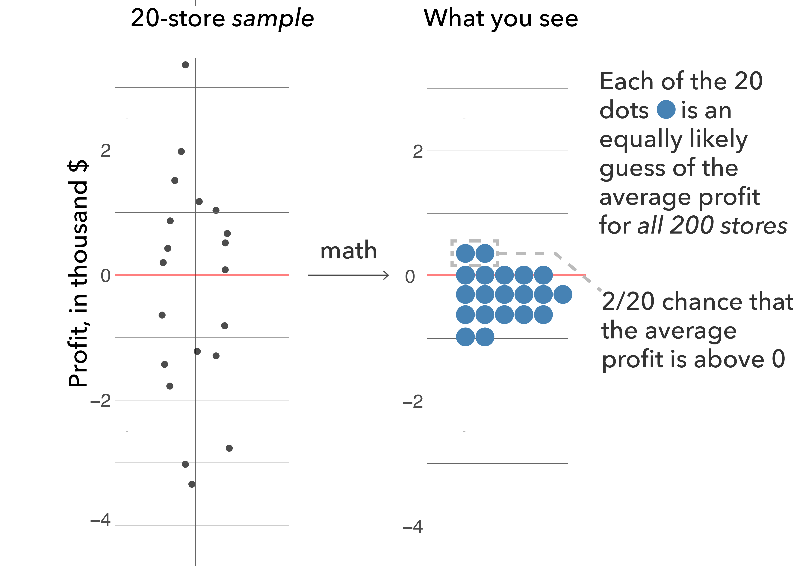
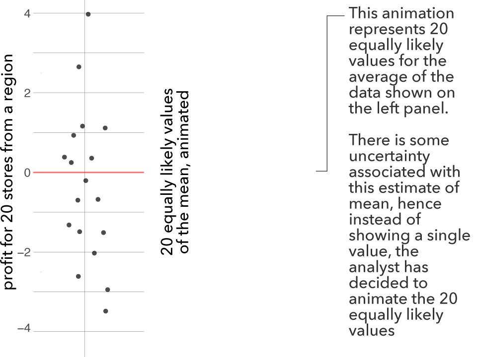
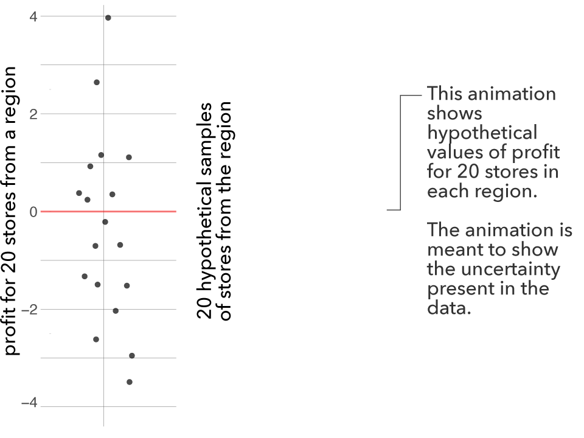

Visualization Insights study
Review
Total Payoff: 0
Introduction

This is the first block of trials. Each block consists of 30 trials.
You've only received sales data for 20 random stores (out of 200) in each region.
To help you evaluate the regional profits with incomplete data, your business analyst used statistics and created plots. Each plot shows the estimated average profit (in thousands of dollars) for a region based on the 20-store sample, and some uncertainty around the estimate (95% confidence interval).
 This is the first block of trials. Each block consists of 30 trials.
This is the first block of trials. Each block consists of 30 trials.
You've only received sales data for 20 random stores (out of 200) in each region.
To help you evaluate the regional profits with incomplete data, your business analyst created plots like the one to the right. The points show the profits made by the twenty-store sample in a given region. Keep in mind that there are 200 stores in total in each region, so your data are incomplete.
 This is the first block of trials. Each block consists of 30 trials.
This is the first block of trials. Each block consists of 30 trials.
You've only received sales data for 20 random stores (out of 200) in each region.
To help you evaluate the regional profits with incomplete data, your business analyst used statistics and created plots. Each plot shows the estimated average profit (in thousands of dollars) for a region based on the 20-store sample, and some uncertainty around the estimate (95% confidence interval). In addition, the grey blob shows the density of the average estimate: the blob is wider around estimates of profits that are more likely.

This is the first block of trials. Each block consists of 30 trials.
You've only received sales data for 20 random stores (out of 200) in each region.
To help you evaluate the regional profits with incomplete data, your business analyst used statistics and created plots. Each plot shows 20 equally likely estimated values of the average profit (in thousands of dollars) for a region based on the 20-store sample. For example, the figure on the right shows that there is a 11⁄20 chance that the average profit is between -0.2 and -1.0 (in thousands of dollars), but there is also a 2⁄20 chance that the average profit could be less than -1.0 (in thousands of dollars).

This is the first block of trials. Each block consists of 30 trials.
You've only received sales data for 20 random stores (out of 200) in each region.
To help you evaluate the regional profits with incomplete data, your business analyst used statistics and created plots. Each plot shows possible estimated values of the average profit (in thousands of dollars) for a region based on the 20-store sample. There is some uncertainty around the estimate of the average profit, and so the analyst decide to animate the 20 possible values of the average profit.

This is the first block of trials. Each block consists of 30 trials.
You've only received sales data for 20 random stores (out of 200) in each region.
To help you evaluate the regional profits with incomplete data, your business analyst used statistics and created plots like the one to the right. The points show the profits made by the twenty-store sample in a given region. Keep in mind that there are 200 stores in total in each region, so your data are incomplete. Hence, the analyst animated to show what hypothetical profits for 20 stores would look like based on the available information.
Reward structure
 Please read the incentive structure carefully as it will change for every block of trial
Please read the incentive structure carefully as it will change for every block of trial
- If you click on a region, and that region does have a profit greater than zero, on average, you will receive 20 points.
- If you click on a region, and that region does not have a profit greater than zero, on average, you will lose 380 points.
- If you do not click on a region, and that region does not have a profit greater than zero on average, you will receive 20 points.
- If you do not click on a region, and that region does have a profit greater than zero, on average, you will lose 20 points.